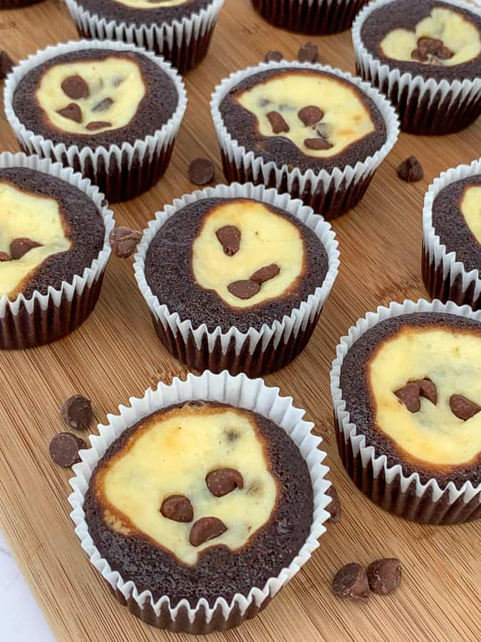

|  |
Preheat the oven to 350 degrees F and line the cupcake pans with paper cups.
Beat cream cheese, egg, 1/3 cup of sugar, and 1/8 teaspoon of salt in a medium bowl until light and fluffy. Stir in chocolate chips and set aside.
Mix together flour, 1 cup of sugar, cocoa, baking soda, and 1/2 teaspoon of salt in a large bowl. Mix well. Then add, water, oil, vinegar, and vanilla. Stir together until blended well.
Fill the prepared muffin tins about 1/3 full with the batter. Using a spoon, place a dollop of the cream cheese mixture into each cupcake.
Bake in the preheated oven for 25 to 30 minutes. Insert a toothpick into the center of a cupcake and if it comes out clean it is finished. After the cupcakes are removed from the oven, let them cool so the cream cheese center can set.